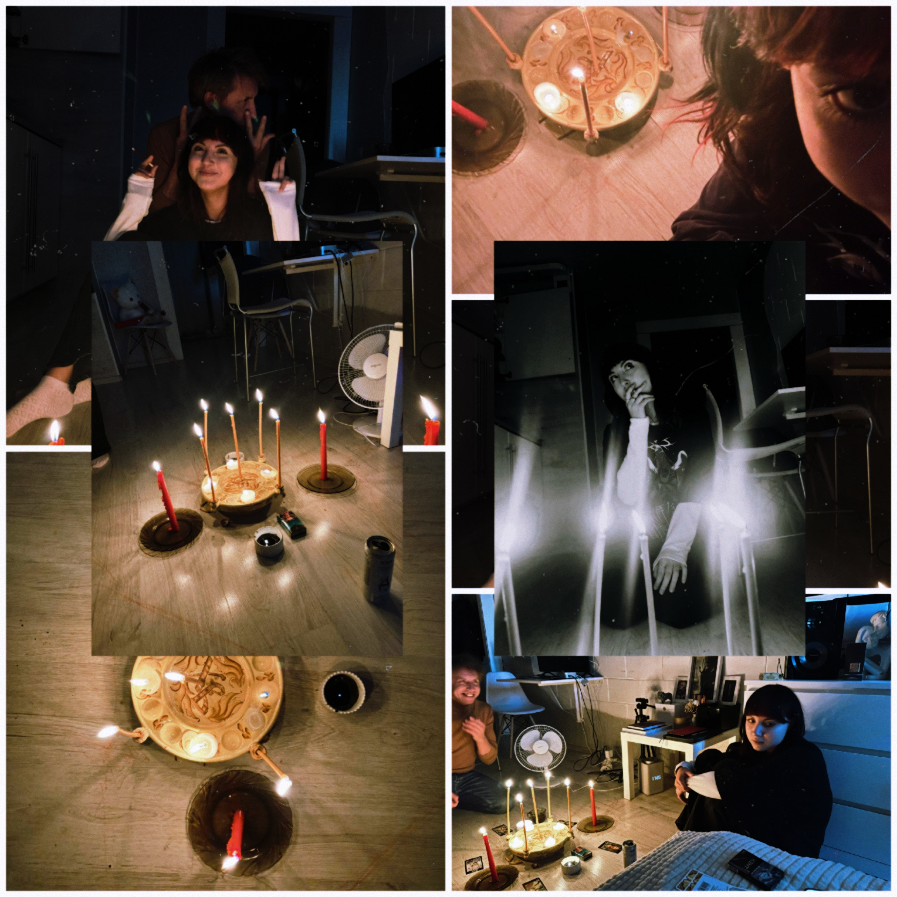

Книга ритуалов

Ино — хранитель этой книги. Он не требует жертв, он требует внимания. Каждый ритуал здесь — это маленький разговор с собой, записанный на полях реальности.
Не произноси ритуалы вслух после полуночи. Или произноси — но тогда не удивляйся, если Ино ответит.
Сгенерировать ритуал
Нажми кнопку — книга сама выберет ритуал из 78 возможных.